Scenario for Photoshop adds a panel that runs Scenario's image, edit, upscale, layer and video models on the document, layer or selection you are working on. You need Photoshop 2026 (27.x) and a Scenario account on a plan with API access (Starter or above).
The launch film, 4 min. One poster, RED HORIZON, made step by step in the panel, then the rest of the Scenario suite: the web app, a workflow in the node editor and Scenario MCP.
Development build 0.7.1
Not on the Adobe Marketplace yet: you build the .ccx package from the repository (see Install). Tested in Photoshop 27.11 on macOS. Open source under the MIT licence.
How it works
The panel reads what you have selected, offers the actions that fit it, and lands each result as layers in your document.
You select
A blank canvas
A flat image
A layer
A selection
A cut-out
A group of takes
You pick an action
Create imageReplace insideRemoveCut out subjectMake versionsNew layerSplit into layersFormatsUpscaleAnimate
and more under More
Create image · 47 CU
The price is on the button, before you click.
It lands as
A layer above the source
A layer masked to the selection
A group of takes to compare
A background and a layer per element
Artboards in a new document
A new document: upscale or clip
Every runis one History state. Each layer keeps its model, prompt, settings and price.AgentsClaude Code, Codex, Cursor or Claude Desktop can do the same through the Scenario MCP, with your approval in the panel.
Four words used on this page
Context
What is selected in Photoshop: a blank canvas, a flat image, a layer, a selection, a cut-out or a group of takes. The panel's actions change with it.
Take
One result of a run. A run can make several takes; they land as a group, and you keep the one you want.
CU
Creative Units, Scenario's credits. Each action button shows its price in CU. Checking the price is free.
Scenario MCP
How an AI agent uses Scenario's tools. The plugin includes a local Scenario MCP server, so an agent can work in your Photoshop documents.
The panel follows your selection
There is no mode to switch. Click a layer, draw a selection or select a group of takes, and the panel's actions change with it. Click a context below to see what the panel offers for it.
Red Horizon @ 100% (RGB/8)
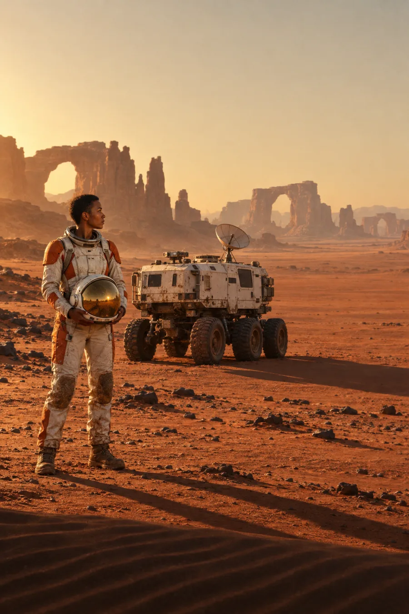
Scenario
Jobs 133
Select…
Drawn from the panel's own lists in this build, with the prompts and prices of the RED HORIZON runs. A seventh context, one layer made by Split into layers, offers Make versions, Relight to scene, New angle and Upscale.
The example: one poster in eight steps
The eight steps below follow one picture, RED HORIZON: a poster for a science-fiction feature, with an explorer on Mars, her six-wheeled rover and a red plain under rock arches.
Each step pairs a Photoshop tool with a Scenario action. Drag across the picture to compare the first take with the finished poster.
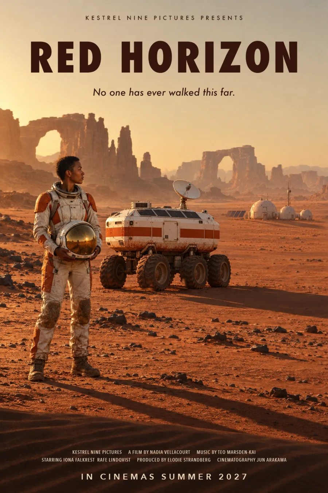
Take 3The poster↔
Left, the take Create image made in step 1. Right, the finished poster: a new livery and an outpost from step 2, six lines of type from step 5.
Every picture is a real run in Photoshop 2026 with this development build, at the models the panel showed. Pictures from the second film carry the label THE LAST KEEPER. Prices are the ones the buttons showed; they change with the model, the document and the settings. The project name in the panel is blurred.
Step 1 of 8
Create an image on a blank canvas
Create image makes a picture from your prompt at the shape of your canvas, in up to four takes.
When to use it: to start a new picture. It is the first action the panel offers on a blank canvas.
Make a document with File › New. The panel offers Create image.
Type what you want. Or click Suggest, which proposes three prompts to pick from.
Set the number of takes in the takes chip. The button shows the price: Create image · 47 CU for four takes at quality High (the gear holds the quality).
Click the button. The panel shows Queued, Generating, then Downloading.
The takes land as one group above the Background, take 1 showing.
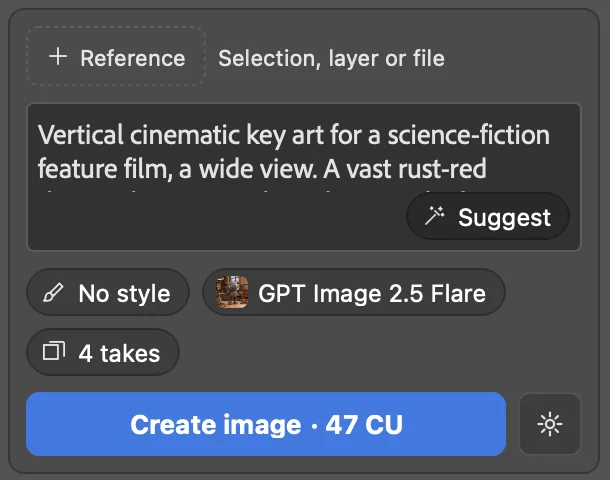
The prompt, the model, the takes and the price.
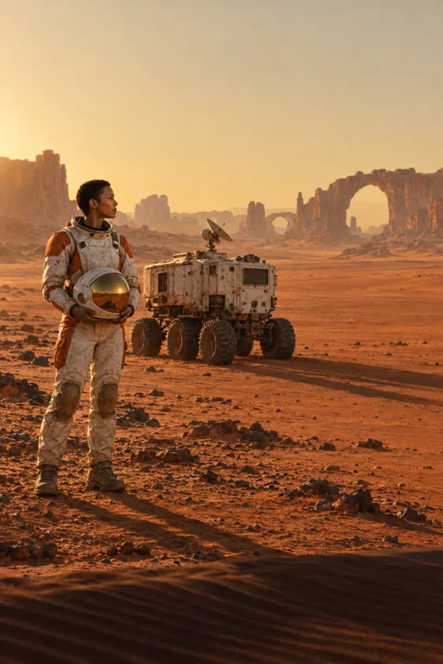
Take 1
Take 2
Take 3, kept
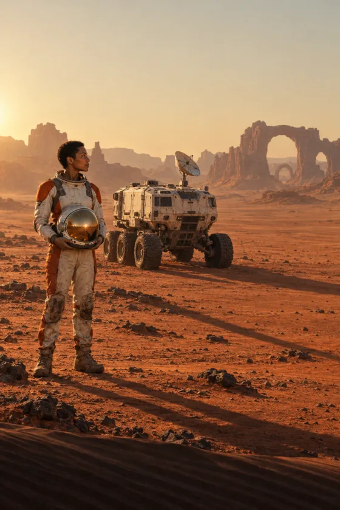
Take 4
Four takes of one prompt, on GPT Image 2.5 Flare. Take 3 was kept: she holds her helmet at the waist, which the character sheet uses in step 3.
Tip
Leave the title out of the prompt and set it later with the Type tool. It stays editable, and Formats can lay it out again in step 5.
Keep one take
The Takes card shows a tile per take. Click a tile to show that take in the document.
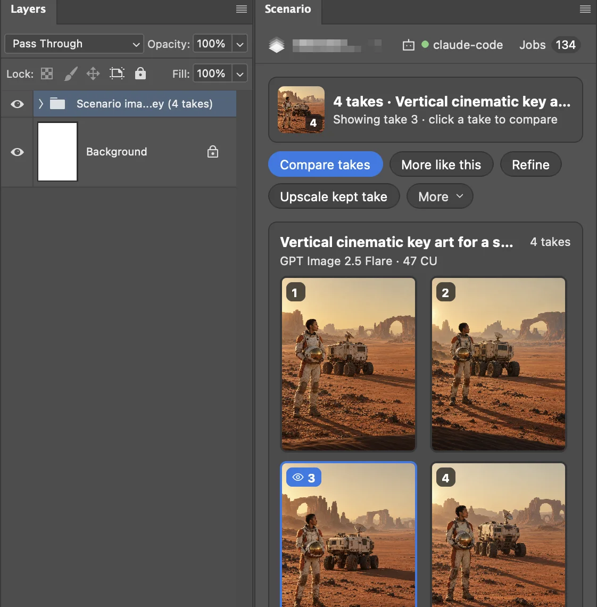
The group of four takes in the Layers panel, and the Takes card with take 3 showing.
Keep take 3 removes the other takes from the document. Their files stay in the output folder and in Jobs.
More like this runs again with the shown take as a reference.
Refine keeps the shown take, loads its selection back and opens Replace inside on it.
Later, select the group in the Layers panel, even after a restart, and the Takes card comes back.
Start from a sketch instead
Render sketch turns a drawing on a layer into a finished picture. What was where in the drawing stays there.
Draw the layout on a layer, or place a scan.
Choose More › Make variants › Render sketch.
Describe the finish you want and click the button.
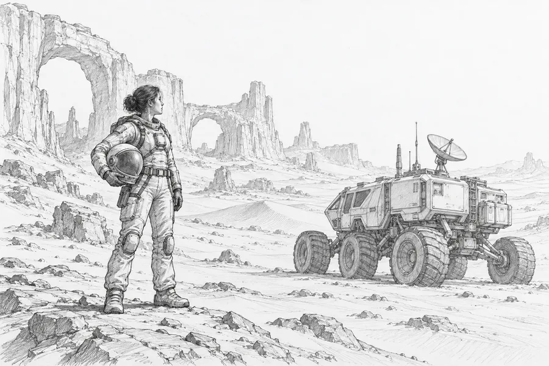
Sketch layerRender sketch↔
RED HORIZON's first pencil layout, and the second of two takes on GPT Image 2.5 Sunburst. Drag across the picture.
Step 2 of 8
Change part of a picture inside a selection
Replace inside redraws what is inside a Photoshop selection from your prompt. The result lands on its own layer, masked to the selection.
When to use it: to add or change one element and leave the rest of the picture as it was.
Draw the selection with any Photoshop tool: the Lasso, a marquee, Select › Modify. Or type what to select and let Select by description find it.
Inside selection or Bolder
The Edit chip of Replace inside has two modes:
Inside selection changes only what is inside the selection. Use it when the change fits the shape you drew: an object taller than the selection is cut at its edge. Default model: Ideogram 4.5 Precise Edit.
Bolder makes a stronger change. The new subject may reach past the selection, and the mask grows to keep it whole. Use it for an object larger than the old one. Default model: GPT Image 2.5 Flare.
After a run, the take offers Try Bolder or Try Inside selection to run the other mode on the same selection.
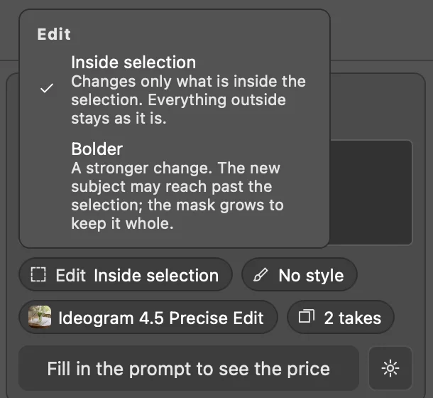
The Edit menu on Replace inside.
Example: a new livery for the rover
Type "the rover" in the panel's Select… field and click Select. Its mask becomes a Photoshop selection. Selecting is a run of its own, with its own price.
In Photoshop, Select › Modify › Expand, then Feather, to give the new livery room and a soft edge.
Choose Replace inside, set Edit to Bolder and describe the change. Replace inside · 23 CU for two takes.
Keep a take. It lands on its own layer, with a mask in the selection's shape.
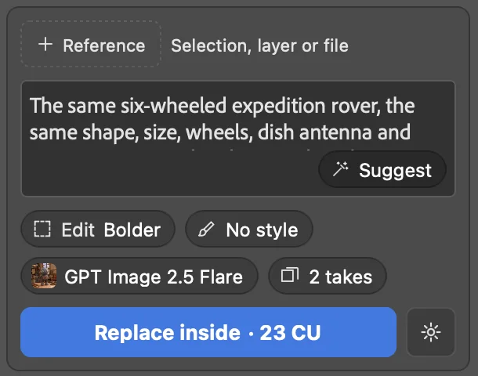
Bolder, two takes, the price.
BeforeBolder↔
Same place and size, six wheels and a dish. The body comes back white, with burnt-orange bands and solar panels on the roof.
Look closely
Bolder can change more than you asked. Here it also reshaped parts of the rover's body.
Example: an outpost in a lasso
Lasso a patch of empty plain and feather it. Run Replace inside with Bolder: "A small research outpost standing on the open plain in the middle distance…". Replace inside · 23 CU.
The plainBolder in a lasso↔
Three domes, a mast and solar panels where the lasso was, their shadows falling the same way as the rover's.
Tip
If the light does not match, try the other mode. Two Inside selection runs on this lasso drew the outpost without shadows, then with shadows too short. The Bolder run was kept.
Example: Inside selection on gouache
On THE LAST KEEPER, the second film's painted key art, a lasso on the open sea and Inside selection added a rowing boat: Replace inside · 80 CU for two takes on Ideogram 4.5 Precise Edit. The boat stays inside the lasso; the waves around it are untouched.
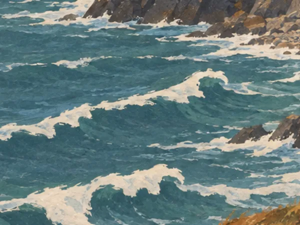
The open seaTHE LAST KEEPER
→
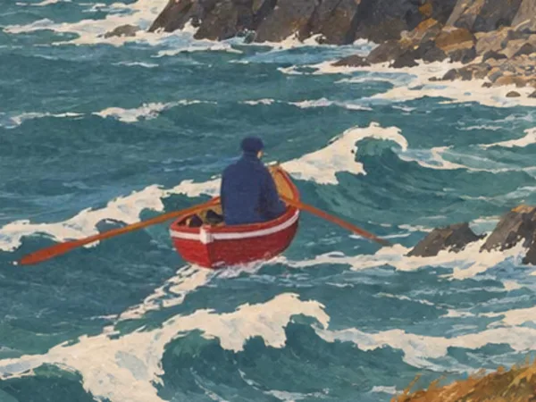
Inside selectionTHE LAST KEEPER
Remove an object
Remove, next to Replace inside, clears what is inside the selection and fills it with what should be behind. It needs no prompt.
Check the take before you keep it
A take can carry a badge. The checks look at tone and alignment around the edge of the selection.
Edges okEdge may showMay not line upPart unchangedSpills past
The badges are hints, not a guarantee. Look at the take at 100% before you keep it.
Step 3 of 8
Cut out a character and build a turnaround sheet
Three actions build a character sheet from one picture: Cut out subject lifts the figure out, Make versions draws her from other angles, New layer adds a prop.
When to use it: to get a figure on its own layer, or to show one character from every side.
The finished sheet. Each view and the helmet are separate layers; the title and labels are live type.
Cut out the subject
Draw a loose Lasso around her. It does not need to follow her outline.
Click Cut out subject. It needs no prompt: Cut out subject · 1 CU.
She lands on a new layer with a transparent background. The original layer stays as it was.
Lasso
→
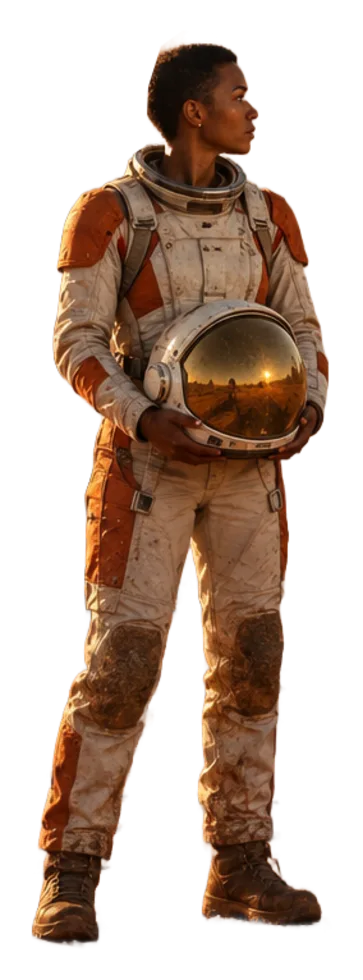
Cut out subject
On the sheet, this cut-out is her three-quarter view.
Draw her from the front, side and back
Lay out the sheet in Photoshop: cream paper, the title, and a type layer for each label.
Run Make versions once per view, with a prompt for that view: "The same woman alone, in the same worn white and burnt-orange expedition spacesuit…". Make versions · 23 CU for two takes.
Keep a take, then choose Remove background in its More menu: Remove background · 1 CU. It lands as a mask, so you can paint it.
Place each view on the sheet with Edit › Free Transform.
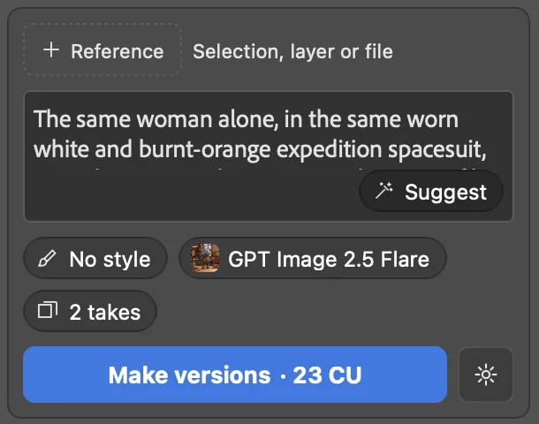
One Make versions run per view.
See the takes for the front and side views
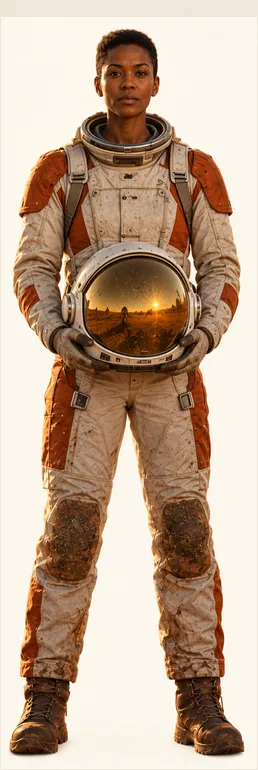
Front 1
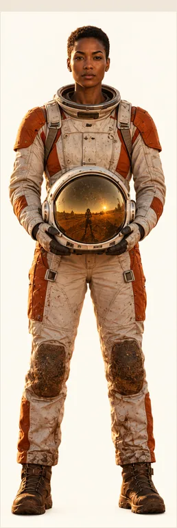
Front 2
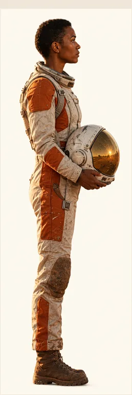
Side 1
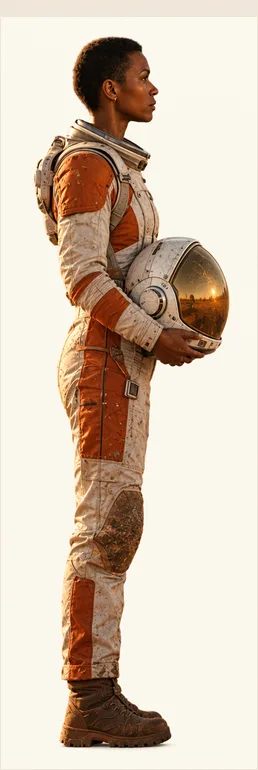
Side 2
Two takes per run, on GPT Image 2.5 Flare. One take of each view went on the sheet.
Add a prop inside a marquee
Draw a Rectangular Marquee where the prop goes: 400 × 520 px here, about the size of her torso.
Choose New layer and describe the prop: "her round expedition helmet on its own…". New layer · 27 CU for two takes.
The take is sized to the selection and placed inside it, so the paper and the label around it stay visible.
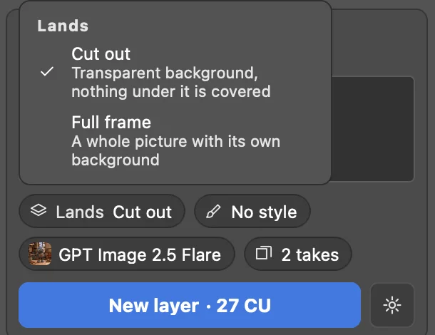
Lands: Cut out, the default.
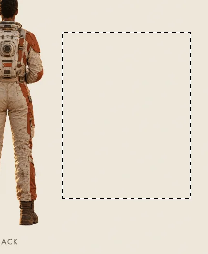
Marquee
→
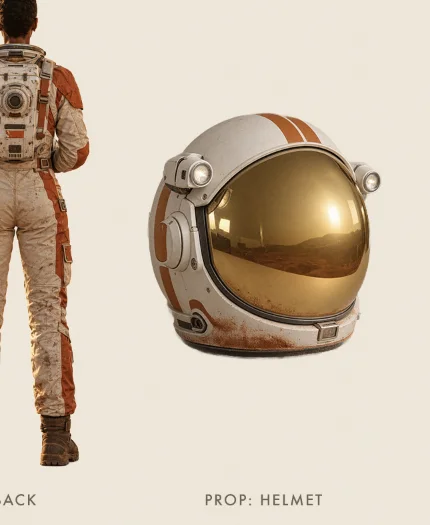
New layer
Lands: Cut out, the default, asks the model for a transparent background. When the model returns a full picture anyway, Photoshop's Remove Background cuts it, as a layer mask you can paint.
Full frame keeps the model's background inside the selection box.
Here the kept take still had a background; Remove background on the take cleared it.
See the same steps on THE LAST KEEPER
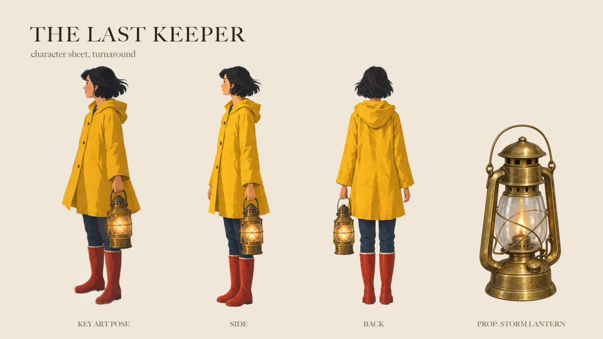
THE LAST KEEPER Her cut-out from the key art, side and back views from Make versions, and the storm lantern from New layer in a tall marquee: New layer · 24 CU.
Turn a subject to a preset angle
New angle (More › Make variants) turns the subject on a layer to Turn left 45°, Turn right 45°, Side view, Back view or From above. It needs no prompt and runs on Qwen Edit Multiangle 2511.
Neither film uses it: their side and back views come from Make versions, with a prompt per view.
Step 4 of 8
Split a flat picture into layers
Split into layers rebuilds a flat picture as a group: a clean background and one layer per element, each where it was.
When to use it: on a delivered JPEG, a flattened file or a generated picture, to move, scale or recolour its elements one by one.
Select the picture. On a flat image Split into layers is the first chip; on a layer it is in More › Layers.
Leave the prompt empty for the main elements, or list them: "the explorer and her long shadow, the rover and its shadow, the research outpost". Split into layers · 28 CU.
A group lands above the source: the background and layers named Element 1, 2 and 3. The source layer is hidden below.
Move or scale each element with Edit › Free Transform.
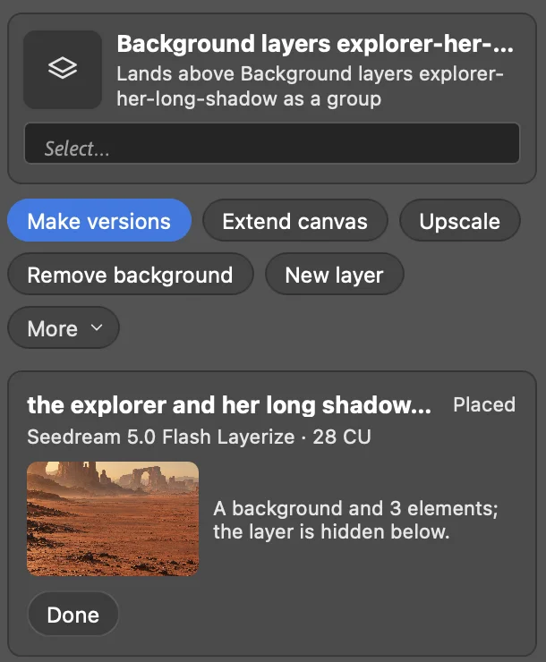
A background and three elements.
Background
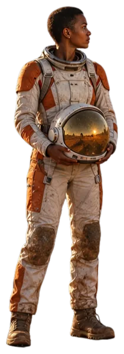
Element: explorer
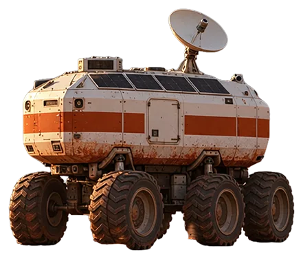
Element: rover
Element: outpost
What came back, on Seedream 5.0 Flash Layerize, shown here on a checkerboard. In Photoshop each element sits where it was in the frame.
Look closely
Check where each element landed. Of four runs on RED HORIZON, three placed the explorer 80 to 105 px from where she stood; the first run was kept. Elements are numbered in the model's order, not the prompt's.
Bring the cast shadows back
The split left the long cast shadows behind, on all four runs. Photoshop brings them back:
Copy the original picture to a new layer, named Cast shadows.
Lasso each shadow and add a feathered layer mask.
The shadows now have their own layer: they stay where they are when an element moves.
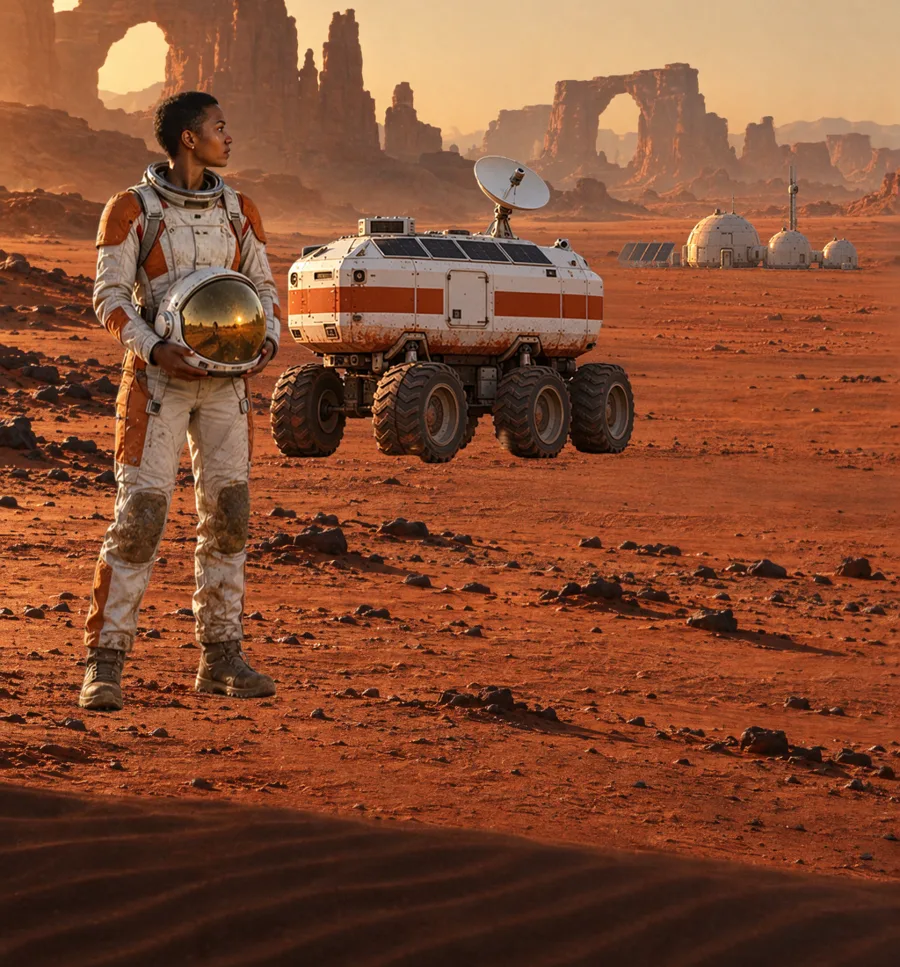
After the split
→
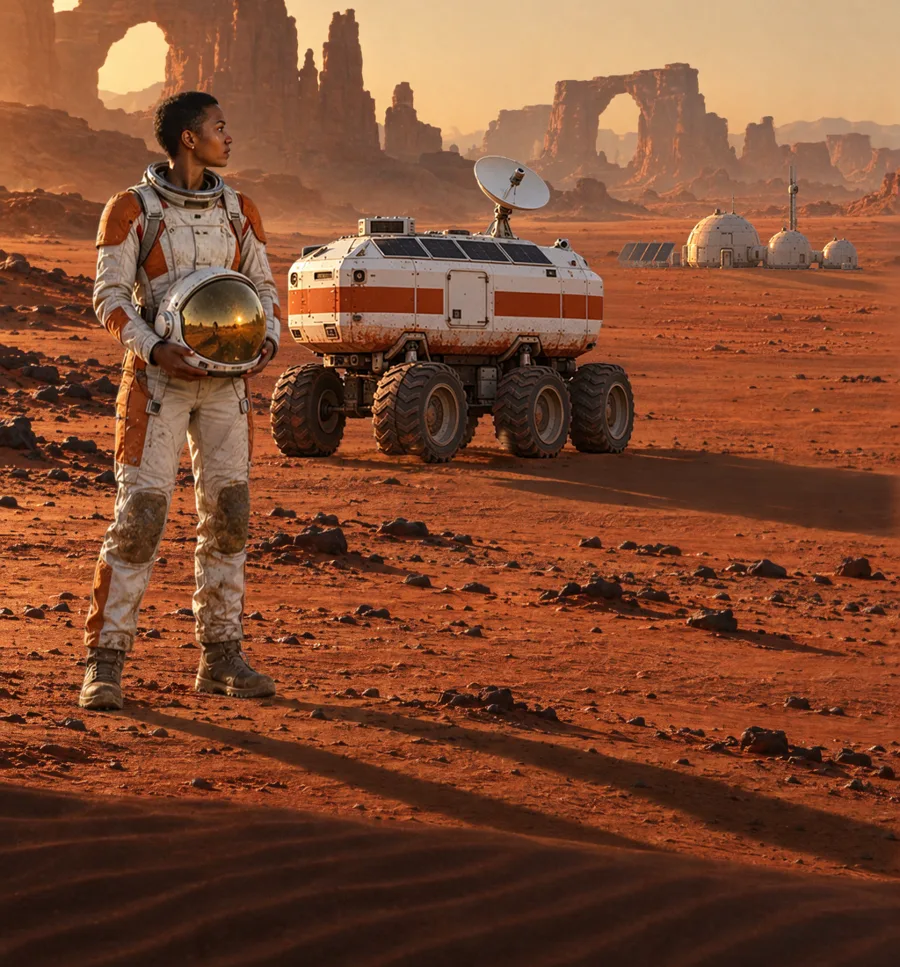
Shadows masked in
Recolour every orange stripe at once
Type "orange stripe" in the Select… field. SAM 3.1 Image finds 20 objects on her suit and the rover, as one selection.
Layer › New Adjustment Layer › Hue/Saturation. The selection becomes its mask.
Move Hue. One slider recolours the suit and the rover together.
As made
Hue −170
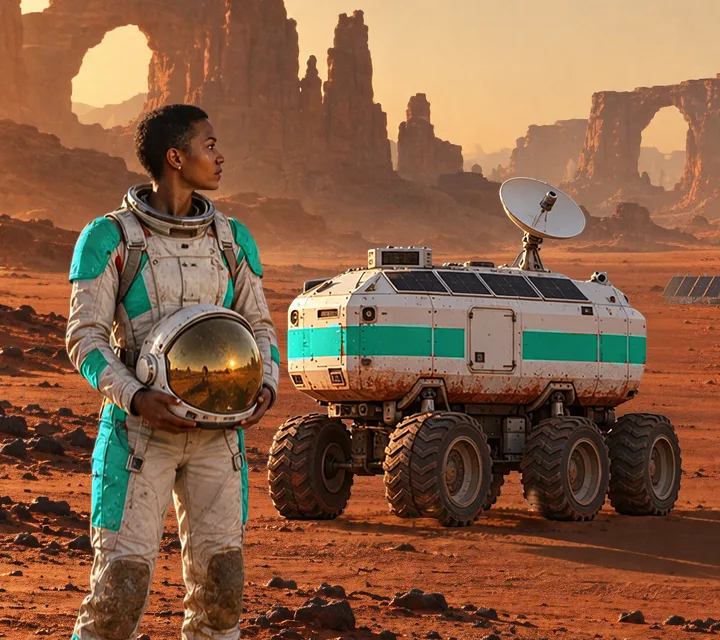
Hue +150
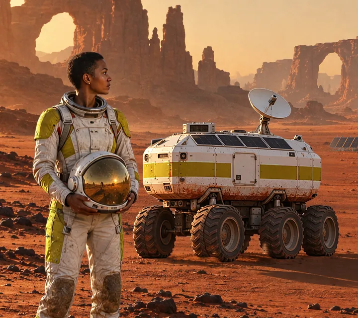
Hue +25
One selection, one adjustment layer, four liveries.
Grade each element on its own
On a split picture you can grade one element at a time: Layer › New Adjustment Layer › Hue/Saturation, with Use Previous Layer to Create Clipping Mask on. The adjustment touches that element only.
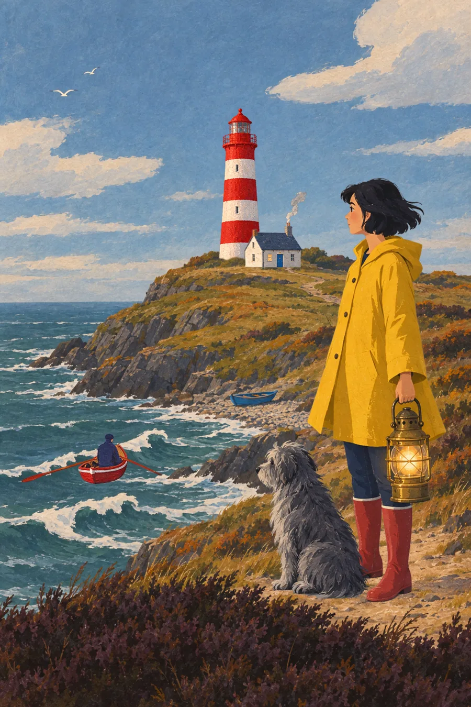
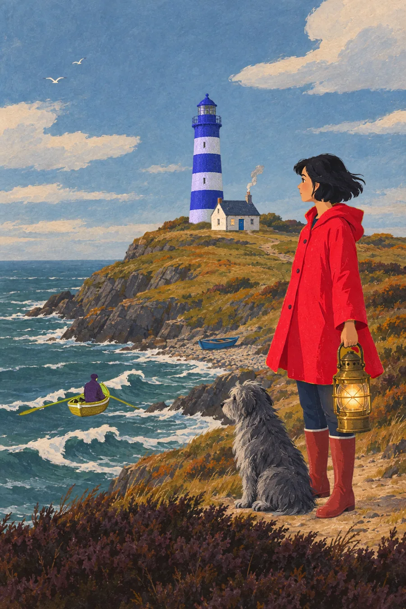
Split layersRecolouredTHE LAST KEEPER↔
The lighthouse blue, the rowing boat yellow, her raincoat red, one clipped Hue/Saturation layer each. The split put the lighthouse 58 px off its place; Move put it back.
Relight an element
Relight to scene (More › Make variants) relights a cut-out or a split element to match what is under it, on GPT Image 2.5 Sunburst. Neither film uses it.
Look closely
Relight can redraw details. Name what must stay in the prompt, and compare the takes at 100% before you keep one.
Separate painted text from the picture
For a title painted into the pixels, such as a flattened file: Split text (More › Layers) returns the clean picture and the text on its own layer, on Ideogram V3 Layerize Text, with no prompt. Remove text (More › Finish) gives only the clean picture.
Neither film needs it: their titles are live type from the start.
Step 5 of 8
Reframe the poster to four formats
Formats reframes the picture to 9:16, 4:5, 1:1 or 16:9, as artboards in one new document. Your type layers are laid out again on each artboard, still editable.
When to use it: when one poster has to ship at social and web sizes.
Set the type with the Type tool, one type layer per line. RED HORIZON has six: a studio line, the title, a tagline, two billing lines and a release line.
Select the art and choose Formats: a chip on a flat image, More › Finish on a layer. Pick the format in the Format chip.
Optional: say what must stay in frame. "Keep the explorer, the rover and the research outpost whole in frame, at their size." Formats · 45 CU per format.
Run the next format. It is added to the same document, next to the others.
Finish in Photoshop: here the Move tool took the billing lines clear of her boots on 1:1 and 16:9.
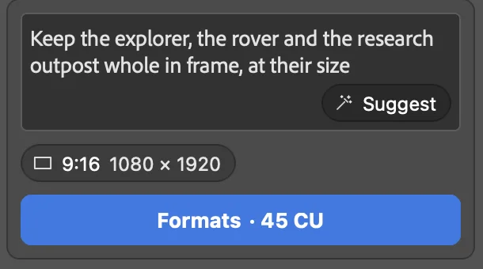
What must stay in frame, then the format.
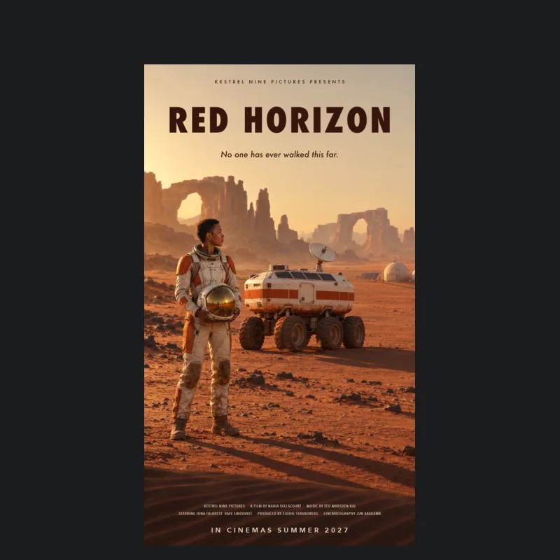
9:16 · 1080 × 1920
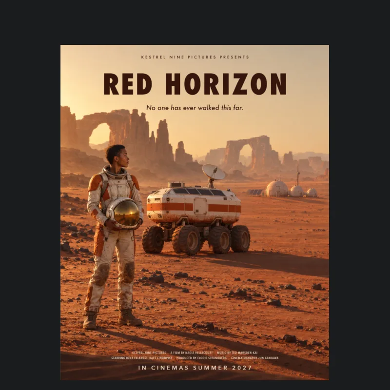
4:5 · 1080 × 1350
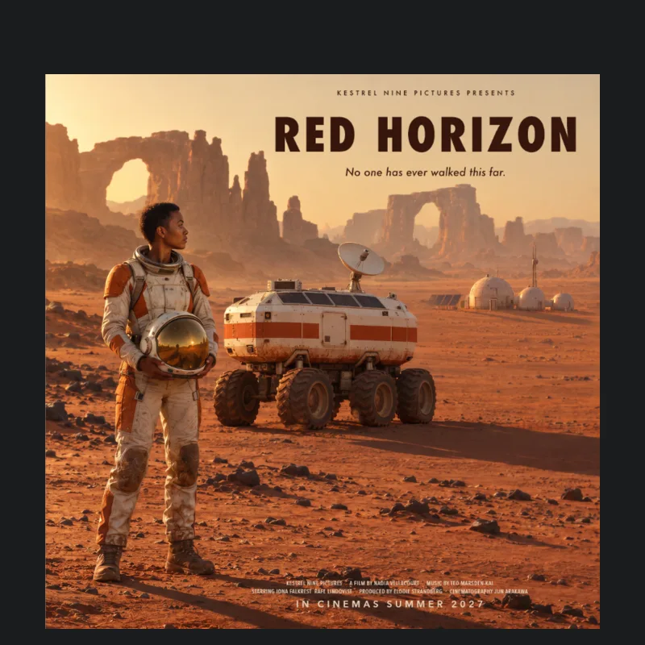
1:1 · 1080 × 1080
16:9 · 1920 × 1080
The four artboards of one document, on Smart Reframe, each with its six lines of live type. On 9:16 the right edge cuts through the outpost.
Look closely
Text painted into the pixels is reframed with the picture and can be cut. Separate it first with Split text (step 4).
Extend the canvas instead
To grow the picture itself to a wider ratio, use Extend canvas: a chip on a layer, More › Finish on a flat image. Pick the ratio in Extend to.
The default model, Reframe, redraws the frame around the original. For +20% each side, pick GPT Image 2.5 Flare. Neither film uses Extend canvas.
Look closely
Look at the old edges at 100%. Test runs showed a step at the old edge, or a figure drawn twice. Extend in smaller steps if you see one.
Step 6 of 8
Upscale the poster for print
Upscale doubles the pixels with Topaz Image Upscale and opens the result as a new document. The source document is not changed.
When to use it: before print, or to add detail to a take you kept.
Press ShiftOptionCommandE (Stamp Visible) to merge everything you see, art and type, onto a new layer.
Choose Upscale this layer (More › Finish), ×2. It needs no prompt: Upscale ×2 · 10 CU.
A 2048 × 3072 document opens next to the poster, named after it.
In Image › Image Size, with Resample off, set 300 ppi: the print size reads 17.3 × 26 cm.
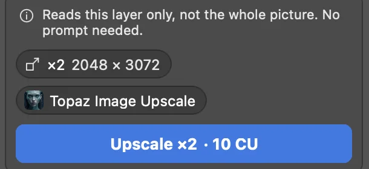
Reads this layer only.
Original, 500%
→
×2, 250%
Her face at the same size on screen: the 1024 × 1536 poster, and the 2048 × 3072 document Upscale opened.
Tip
Upscale this layer reads the active layer only, which is why you stamp first. Upscale on a flat image reads all visible layers, and Upscale kept take upscales the take you kept.
Step 7 of 8
Animate the poster
Animate makes a short clip from the picture and your prompt, 5 seconds by default, and opens it as a video document.
When to use it: for a moving version of the key art, for a social post or an editor.
The clip as it came back, on Minimax H3: she turns toward the rover while red dust drifts across the plain.
With the art layer active, choose More › Animate.
Describe the motion: "Camera locked off, nothing changes size or position. Fine red dust drifts low across the…". The default model is Minimax H3 Fast; this clip ran on Minimax H3.
The clip opens as a new document with a Video Group in the Timeline. The MP4 is saved in the output folder.
Trim it or set a title over it, then File › Export › Render Video.
Tip
Animate reads the picture without its type layers, so the motion never warps the lettering. Frame to layer brings the clip's last frame back as a layer, to animate again from it.
Step 8 of 8
Let an agent work in Photoshop
An AI agent such as Claude Code, Codex, Cursor or Claude Desktop can read your document, run Scenario actions and land layers, through the plugin's local Scenario MCP server.
When to use it: to ask for an edit in words and let the agent run the steps, while you approve its spending in the panel.
The server, scenario-photoshop, runs on your computer only and talks to the panel over localhost. It holds no Scenario key: generations run through the plugin, with the account you signed in with.
Connect a client
In the panel, open Settings › Connect an AI agent › Connect a client.
For Claude Code, Codex or Cursor, click Copy command and run it in a terminal. For Claude Desktop, click Get the extension, then Copy token.
Restart the client so it starts the server.
Ask it "What document is open in Photoshop?". The client's row turns to Connected.
A row per client.
In this development build
The server is not on npm yet, so the copied npx commands work once it is published. From a checkout of the repository, after Copy pairing token:
Buttons that copy the pairing token clear the clipboard after 60 seconds.
Client
How it was checked
Claude Code
Checked live: sessions that read the document, priced, spent through the spend card and landed through the proposal card.
Codex
The setup command, through the real Codex CLI. No session against Photoshop yet.
Cursor
Config writing, in the test suite. Cursor itself not tested.
Claude Desktop
The .mcpb extension ships with the first published release. Not tested.
Where you approve
A typical edit, in the order the agent works. It stops at three cards in the panel:
Reads the documentdocument_summary
Sets a selectionset_selection
Captures the areacapture_reference
Sends the pixels to Scenarioupload_referenceUpload card. Asked before an agent first sends pixels from a document in a session.
Prices the run, for freeestimate_cost
Runs itgenerateSpend card. The client, the model, the prompt and the price on Approve. Decline spends nothing.
Waits and looks at the takeswait_for_jobinspect_result_previews
Lands the resultprepare_result_applicationapply_result_applicationProposal card. The target document and the History name. Apply lands it in one step.
Exact price. The agent must send back the price it was quoted. A changed price or an expired quote is refused before anything is spent. A card left unanswered expires after 10 minutes.
Agent spending in Settings: Ask each time, the default, or Allow for one client session, with a limit per call and a total. End stops it at once.
No picture yet. The proposal card shows no picture of the result in this build.
Activity log. It lists every agent request. The agent's jobs also show in Jobs, marked with the client's name.
What agents may do
Three switches in Settings › Connect an AI agent, all off by default, and No-spend mode:
Switch
Off (default)
On
Agents may modify the document
Every result an agent wants to land shows a proposal card, with Apply and Dismiss
Results land at once as one History step, "Scenario agent: <action>", with an Undo banner
Agents may run Photoshop commands
Refused
batchPlay on the document in front, one History step per call. Saving, closing, exporting, printing, Actions, scripts, Adobe's generative features and settings are always refused. Needs the first switch; turns off when Photoshop quits
Agents read the active document only
Agents can read every open document
Only the document you are working on, and its jobs
No-spend mode
Refuses every agent request that would spend credits, whatever the other switches say
Agents change only the document in front. The plugin never brings another document forward for them.
The 29 tools
Each square is one tool of the local server; hover or focus it for its name. Amber squares need a switch.
Setup per client, the approvals and the tool reference: docs/MCP.md. Copy skills command in Connect a client copies npx skills add scenario-labs/skills, which installs the Scenario skills in your agent.
The same steps on gouache key art
The second film, THE LAST KEEPER, runs the plugin on painted key art for an animated feature.
A young woman in a yellow raincoat with her dog and a storm lantern, a striped lighthouse on a headland, a rowing boat heading out to sea. Its pictures on this page carry the label THE LAST KEEPER: the rowing boat, the character sheet and the recolour.
Second filmThe film is not on this page yet.
THE LAST KEEPER, 4 min: the same eight steps, then the web app, a workflow in the node editor and Scenario MCP.
The illustrated guide
The same handbook as a 30-page PDF, one chapter per step, then install, prices, jobs, privacy, troubleshooting and known limits.
Read it here page by page, or open the PDF.
Guide · PDF · 30 pages A4 · 9 MB
Scenario's models work inside Photoshop and land as layers
Seventeen chapters and an index. RED HORIZON illustrates every chapter, THE LAST KEEPER the steps it shows better.
Open the panel from Plugins › Scenario. Photoshop hides docked panels on its Home screen, so open or make a document first.
Checked live with the release package on macOS: install, restart, sign-in and a first image took 1 min 53 s, with a script doing the clicks. Installing by double-clicking the .ccx was not tested.
Sign in
On app.scenario.com, in the project you want to use, create a Project key with the Editor role. Copy the key and its secret. Only team admins and project owners can create keys: Copy a request for your admin prepares the message.
Paste both in the panel and click Save and test. Pasting key:secret fills both fields. Two free reads check the key.
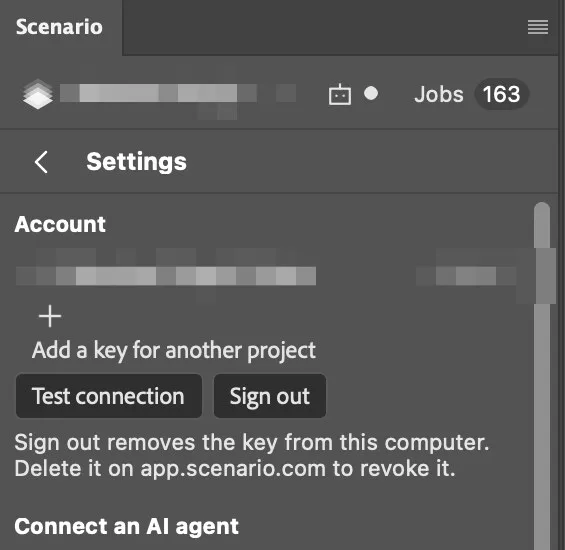
Settings › Account. Project and key blurred.
Where the key is kept
Photoshop's secure storage for this plugin, one entry per project, under your operating system account. It goes only to Scenario's API over HTTPS, never to the helper or to agents.
Another project
Add a key for another project, then click the project name in the panel header to switch.
A spending cap
A CU limit on the key, set on app.scenario.com, caps what the plugin and connected agents can spend.
Sign out
Removes the key from this computer only. Delete the key on app.scenario.com to revoke it.
The panel, top to bottom
Scenario is a docked Photoshop panel. It keeps one order: header, context card, action chips, Takes and Recent, and the composer pinned at the bottom.
Here on RED HORIZON's first step, a blank canvas with the prompt typed. The empty middle of the panel is cut out.
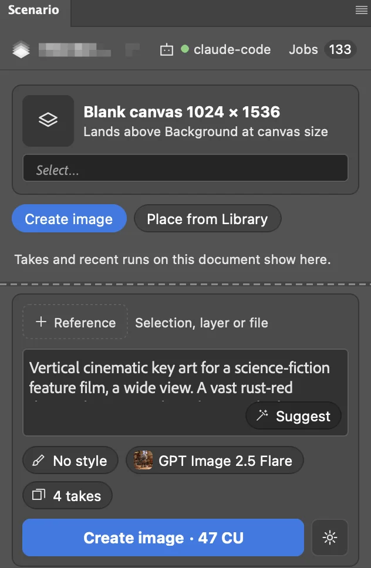
123456789
Header. The signed-in project (click to switch; blurred here), the agent icon with its status, and Jobs with a count.
Context card. What the panel works on and where the result lands. During a run it shows the progress.
Select… Select by description.
Action chips. At most six for this context, then More, with the rest in groups: Finish, Select and cut, Layers, Make variants, Animate. A pin in More adds an action to the chips.
+ Reference. The selection's box, a layer, all visible, a file or a Library image.
Prompt. An action that needs none says so.
Suggest. Proposes prompts for the action.
Chips. Style, model and takes, each showing its value. The gear holds the quality, Medium by default, and advanced options.
The action button, with its price: Create image · 47 CU for four takes at quality High.
Actions by context
Context
Chips, in order
Blank canvas
Create image, Place from Library
Flat image
Split into layers, Make versions, Upscale, Formats, More
Layer
Make versions, Extend canvas, Upscale, Remove background, New layer, More
Cut-out
Add background, Relight to scene, Make versions, Upscale, Extend canvas, More
Split element
Make versions, Relight to scene, New angle, Upscale, More
Selection
Replace inside, Remove, Make versions, Cut out subject, New layer
Takes
Compare takes, More like this, Refine, Upscale kept take, More
With no document open the panel offers Create image and Open from Library, but Photoshop hides docked panels on its Home screen.
Takes, styles and models
The chips under the prompt set what one run makes: the model, the style and the number of takes. Each shows its value.
Takes chip
How many takes one run makes; the price follows.
Make versions
Variations of the layer, or the change you describe. With an empty prompt a built-in one is sent. Also works on a selection.
Keep take
Leaves the group named after its prompt. A layer you added to the group, or a copy of a take, is never deleted by Keep.
Model chip
The action's recommended model, then catalog models that can do it, with their prices for this document, then All models…: search, the Image, Edit, Enhance and Trained tabs, favorites.
Style chip
No style, Match an image (not tested live) and the project's trained styles.
Trained models
Run on their base model, with their trigger words before your prompt. Checked live with FLUX.1 Dev and FLUX.2 Dev models.
+ Reference
The selection's box, the active layer, all visible, a PNG or JPEG file, or a Library image. References upload at the click.
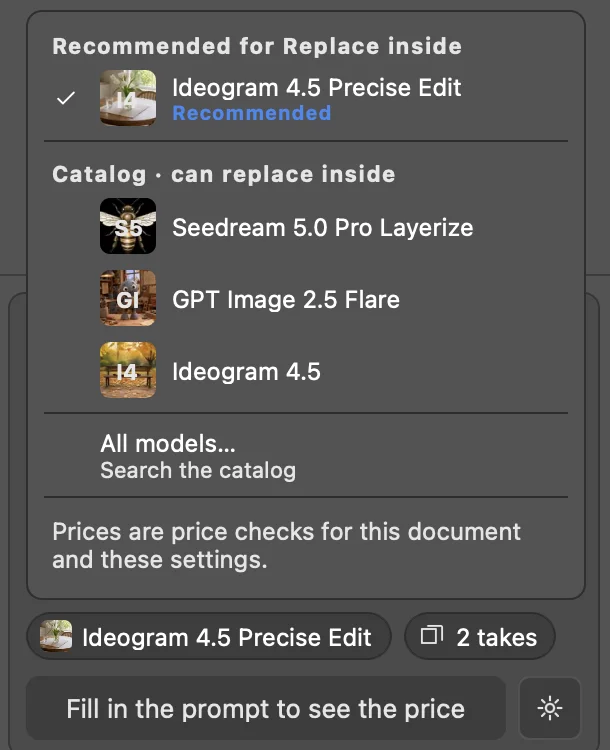
The Model menu, on Replace inside.
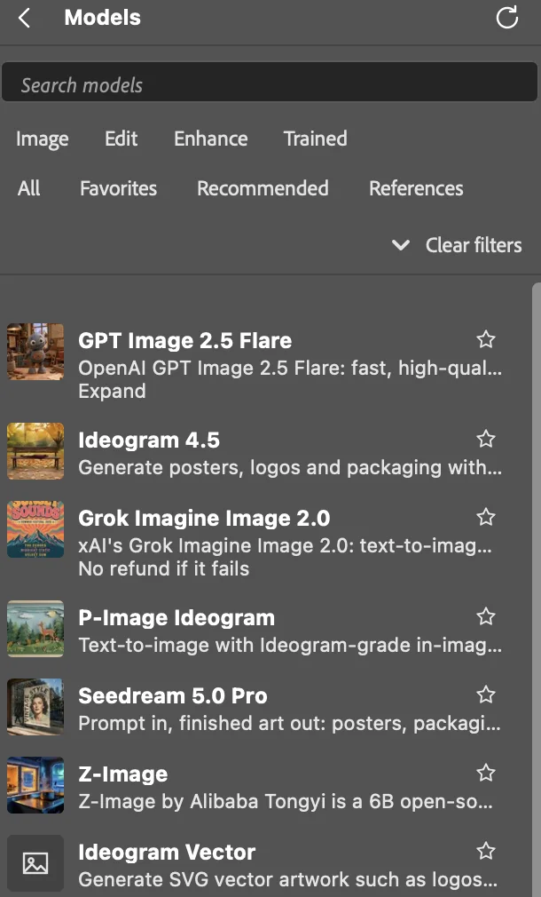
All models.
Default models in this build
Action
Default model
Create image, New layer, Make versions, Bolder
GPT Image 2.5 Flare
Replace inside, Inside selection
Ideogram 4.5 Precise Edit
Remove
Ideogram 4.5
Select by description
SAM 3.1 Image
Cut out subject, Remove background
851 Labs Background Remover
New angle
Qwen Edit Multiangle 2511
Split into layers
Seedream 5.0 Flash Layerize
Split text, Remove text
Ideogram V3 Layerize Text
Render sketch, Relight to scene
GPT Image 2.5 Sunburst
Formats
Smart Reframe
Extend canvas
Reframe, at 2K
Upscale
Topaz Image Upscale, ×2
Animate
Minimax H3 Fast
Prices
The price is on the button. Each change of prompt, model or setting is priced again for free, about half a second later.
The button shows an exact price, a range, or a "from" price. Prices are in CU and change with the model, the document and the settings. These are buttons from RED HORIZON's runs:
Create image · 47 CU4 takes, quality High
Replace inside · 23 CUBolder, 2 takes
Upscale ×2 · 10 CUno prompt
Fill in the prompt to see the priceneeds a prompt
A click on a priced button is the approval. Above 100 CU, for the top of a range and for any "from" price, a card asks first.
Nothing is sent if something changed. The request is built again at the click. If the document, the selection or a setting changed since the price check, nothing is sent.
A new price asks again. If the price changes once references or captures are uploaded, the panel stops and asks again. Nothing was spent.
Refunds. A failed job shows "Refunded by Scenario"; a model without refunds says so before you click. The plugin shows no balance or plan: check those on app.scenario.com.
Jobs
Every run, yours or an agent's, is a job on this computer. It keeps what was asked, the price quoted and charged, and where the result went.
Where
Jobs in the panel header opens the newest jobs, each with its time and price, then All jobs: each job with its picture, status, price quoted and price charged.
Written first
Each job is written to disk before anything is sent, so Jobs survives a restart of Photoshop.
After a restart
Uploading or waiting jobs become not sent, nothing charged; generating jobs resume; finished ones download again. Nothing lands in a document by itself.
Unknown
A request that may or may not have reached Scenario. The plugin looks it up: Link continues a match; Mark not sent appears only when a full look-up found none. Nothing is paid twice.
Place
Place, Place in current document and Open as document land a finished result where you choose.
Library
Your Scenario project's images, one click from the document.
Place from Library, in More › Layers or on a blank canvas, opens a grid of the project's images, with search and the filters All, Generated, Edited and Uploaded, then Show more.
Click an image to place it as a new layer at its own size, never enlarged, centered, in one History state. + Reference › Library uses the same grid.
Everything the panel makes is also in your Scenario project, so the takes you did not keep are there too.
Search matches asset names, which are often not the words of the prompt. Dragging from the grid is not in this build.
Privacy and files
What leaves your computer, when, and what stays on it.
To Scenario's API
Your key and secret with every request, over HTTPS. Prompt, model and settings for price checks and runs. Pixels only at your click: the selection's box plus a margin, a layer or the document, the mask and your references, each upload under 4,000,000 bytes.
Downloaded
Results from Scenario's CDN, the only download host this build accepts, through signed links kept in memory, without your key.
To an agent
What a connected agent reads, including previews of your documents, goes to that agent's model provider, under your agreement with that provider. The helper never receives your key.
Results
Saved before they are placed, kept or not, in the plugin's output folder, and in your Scenario project.
Each placed layer carries model, prompt, settings, job and prices in its XMP, which survives saving the PSD. Never your key, secret, token, team or project ids, or file paths.
Key and token
Photoshop's secure storage. The helper's token file is readable by your account only.
Diagnostics
Versions, switch states, job counts and recent error types, with no prompts, names, ids, paths, keys or tokens. Copy diagnostics shows the text before copying it.
Local link
Port 9890 of the loopback interface only, which other computers cannot reach. Web pages are refused. The plugin and each helper prove they hold the pairing token without sending it.
Deleting
On this computer: sign out, reset the pairing token, delete the plugin data folder. On Scenario: delete uploads and results in the web app, or write to support@scenario.com. Signing out does not revoke a key: delete it on app.scenario.com.
The plugin sends nothing else: no update check, no analytics. Details: PRIVACY.md. Security reports: privately to support@scenario.com, with "security" in the subject.
Troubleshooting
What you see, and what to do.
What you see
What to do
The panel is empty on Photoshop's Home screen
Open or make a document. Photoshop hides docked panels on Home.
"Scenario did not accept this key and secret."
Copy both again, from a Project key. Enter key again or Create an API key.
"API keys need a Starter plan or above."
Use a team on a plan with API access, or Open plans.
A Team (Organization) key or a Reader key
Use a Project key with the Editor role.
A card says the price changed
Nothing was spent. Approve at the new price, or Cancel.
A job is Unknown
Open Jobs and let it look the job up, then Link or Mark not sent.
A result did not land
Bring the document it started from to the front, then Place in Jobs, or Open as document.
"No connection to Scenario."
Check the network, then Retry.
"Photoshop is busy. Try again in a moment."
Photoshop was placing or reading; the panel tried three times. Click again.
A Request For Permission card from Photoshop
The first link the panel opens to a new site asks Photoshop's permission. Answer it.
A subject cut at the edge of a format
Name it in the Formats prompt and run that format again.
Agents
NotConnected
Open the Scenario panel; the helper reaches it only while it is open.
PairingFailed
The token changed. Run the setup command again from Connect a client.
VersionMismatch
The plugin and helper versions differ. Connect a client shows the command for the new version.
DocumentNotActive
Bring the document forward, then ask the agent to retry.
NoSpend
Turn off No-spend mode in Settings.
QuoteExpired, CostMismatch
Nothing was spent. The agent prices the run again.
SpendDeclined, UploadDeclined
You declined the card. Nothing was spent or sent.
Still stuck: support@scenario.com, with the text from Copy diagnostics.
Known limits
What this build does not do yet, what to look at closely, and what was not tested.
Not in this build
Start a set, Same action on each, and Run a workflow.
Drag and drop onto the panel or from the Library grid.
The update check and an Output Folder setting.
The Adobe Marketplace listing, and the helper on npm.
A picture of the result on the agent's proposal card.
Look closely at
Extend canvas: a step or a repeated detail at the old edge.
Inside selection: a lighter or darker patch at the selection edge. Edges ok is a hint.
Split into layers: a small element can land in the wrong place without a note, and cast shadows can stay behind.
New layer cut out: with several elements, Photoshop's Remove Background can keep the wrong one.
Relight to scene can redraw details: name what must stay.
Formats: text painted into the pixels is reframed with the picture and can be cut.
Create image on a very large canvas: the model's picture is scaled up to fill it, and the panel does not say so. Upscale kept take adds the detail.
Uploads stay under 4,000,000 bytes. A larger capture is reduced; when the result's size follows it, as for Upscale, the panel stops first and shows the new size and price.
Not tested
Windows, and Photoshop versions other than 27.11.
Installing by double-clicking the .ccx.
Typing the key and secret by hand; the refused-key and no-API-access screens live.
CMYK, Lab and other color profiles (one Upscale on an Adobe RGB 16-bit document kept its colors).
Undo and Redo of a landed result, except Create image.
Match an image live; the trained Z-Image route and a stacked style.
Cursor and Claude Desktop sessions; a Codex session against Photoshop; two agent clients at once.
Panel widths other than 320 px on 0.7.x.
The panel following a Free Transform or a Move before New angle (in the test suite only).
Scenario for Photoshop is open source under the MIT licence. Third-party code is listed in THIRD_PARTY_NOTICES.md. The Scenario logo is a trademark of Scenario, not covered by the licence.
Adobe and Photoshop are trademarks of Adobe. This project is not affiliated with or endorsed by Adobe.